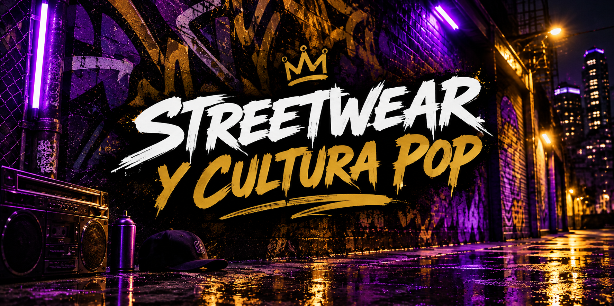

El streetwear dejó de ser solo ropa cómoda para el día a día:
hoy es un lenguaje visual que mezcla música, skate, anime y redes sociales.
En UrbanStyle creemos que cada prenda cuenta una historia — acá te contamos
de dónde viene esta cultura y por qué sigue marcando tendencia.
"Cuando la calle se toma la moda"
🗽 De los callejones de Nueva York...Ahí nació todo —
funcionalidad, identidad y actitud, mucho antes de las pasarelas.
💡 ...a las luces de neón de hoy El streetwear cambió de forma, pero nunca de esencia.
🧬 Cada colección cuenta una historia Identidad, resistencia y estilo propio en cada prenda.
✍️ Y esa historia sigue escribiéndose La calle sigue marcando el ritmo — nosotros solo la seguimos de cerca.
🗽✨ De los callejones de Nueva York a las luces de neón de hoy — el streetwear cambió de forma, pero nunca de actitud.
"Los pixeles también visten streetwear: hoy la moda urbana se mezcla con
la cultura gamer y el anime, creando un estilo que nació en la pantalla y se llevó a la calle."
🎮 La pantalla como pasarela El gaming dejó de ser solo un hobby
— hoy influye directamente en cómo se viste toda una generación.
⚡ Estética neón, actitud real Colores vibrantes, luces y
texturas digitales se trasladaron de las salas gamer a las prendas streetwear.
🌸 El anime como inspiración Sin copiar personajes, muchas colecciones
toman su paleta de colores y su energía visual.
🕹️ Una cultura, un estilo de vida Vestirse streetwear gamer es mostrar identidad
— no solo lo que juegas, sino quién eres.
En definitiva, la cultura gamer no solo cambió nuestra forma de jugar:
cambió la forma en que el mundo se viste. La próxima vez que salgas a la calle, mira a tu alrededor: el próximo nivel de la moda ya está activo.